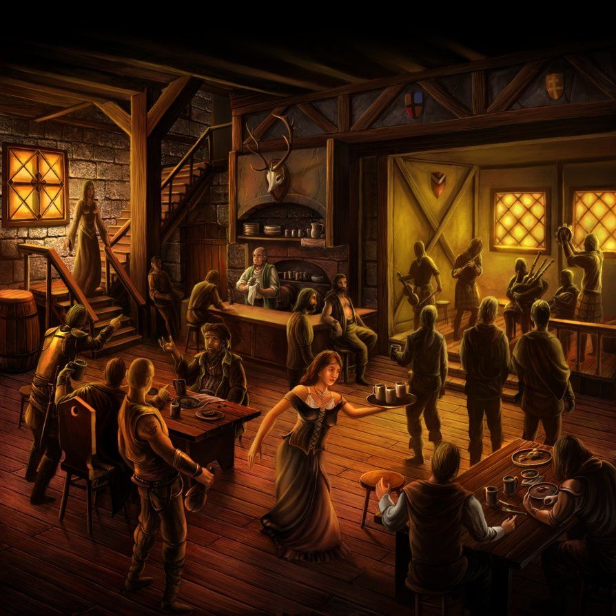

Going into the tavern you notice that it is a much happier atmosphere compared to last time. Around you people are laughing as it is the first time. You ask the owner what has happened and he respons with "A dark evil wizard has been killed and has lifted his spell". You realise that it has been your doings as it's not a coincidence. You pay for a room overnight to get some well neded sleep.
